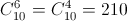

How many six-digit numbers exist, for which each succeeding number is smaller than the previous one?
The first way. One unique choice of 6 digits from the number 9876543210 corresponds to each such number.
The second way. To get a number with "decreasing digits" we need to delete any 4 digits from the number 9876543210.
 numbers.